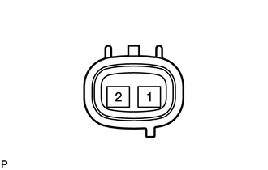

RM3140CG
_52
动力传动系
_023983
K313 CVT
_0116510
转速传感器
G
K313 CVT 转速传感器 检查
程序

 1.检查变速器转速传感器 (NIN)
1.检查变速器转速传感器 (NIN)
a.

1.177,1.792 1.292,1.792
1.292,1.792 1.458,1.281
true
2.271,1.792 2.156,1.792
2.156,1.792 1.99,1.281
true
0.177,0.219 0.365,0.406
0.188,0.188
10
*a
0.802,1.719 1.156,1.896
0.354,0.177
10
NIN+
2.323,1.719 2.646,1.875
0.323,0.156
10
NIN-
| *a | 未连接线束的零部件
（变速器转速传感器 [NIN]） |
根据下表中的值测量电阻。
- 标准电阻:
检测仪连接 条件 规定状态 1 (NIN-) - 2 (NIN+) 20°C (68°F) 560 至 680 Ω
如果结果不符合规定，则更换变速器转速传感器 (NIN)。
2.检查变速器转速传感器 (NOUT)
a.
测量电流，同时在变速器转速传感器 (NOUT) 端部前方 (5 mm [0.197 in.] 或更近）左右晃动磁性物体以改变高电位/低电位信号。

6.073,1.521 6.292,1.927
true
3.521,0.552 3.823,0.552
false
2.208,0.656 2.438,0.656
2.438,0.656 2.51,0.552
false
5.594,1.51 5.396,1.927
true
0.677,0.281 0.917,0.448
0.24,0.167
10
false
*2
6.156,1.969 6.615,2.146
0.458,0.177
10
false
NOTO
5.208,1.969 5.698,2.135
0.49,0.167
10
false
NOTB
2.073,0.573 2.177,0.708
0.104,0.135
10
false
2
3.875,0.469 3.969,0.615
0.094,0.146
10
false
1
0.656,1.333 0.844,1.5
0.188,0.167
10
false
*1
2.604,2.083 2.792,2.292
0.188,0.208
10
false
*c
4.302,1.417 4.49,1.625
0.188,0.208
10
false
*b
5.188,0.542 5.375,0.75
0.188,0.208
10
false
*a
| *1 | 蓄电池 | *2 | 电流表 |
| *a | 未连接线束的零部件
（变速器转速传感器 [NOUT]） |
*b | 磁铁 |
| *c | 5 mm (0.197 in.) 或更小 | - | - |
- 备注：
-
检查过程中，确保晃动磁性物体。如果不按图中箭头所示方向晃动磁性物体，则电流不会改变。
b.
根据下表中的值测量电流。
- 标准电流:
检测仪连接 条件 规定状态 1 (NOTO) - 2 (NOTB) 低电位信号 4 至 8 mA 高电位信号 12 至 16 mA
如果结果不符合规定，则更换变速器转速传感器 (NOUT)。